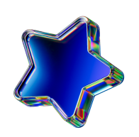
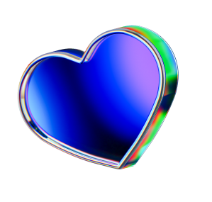

For Microsoft alumni
A 90-minute Activation Session for Microsoft alumni ready for their next iteration: your story, your brand voice, the next version of you.
Activate
You’ve spent years building someone else’s story, brilliantly. Now something is stirring that’s entirely yours: an idea, a venture, a version of you that doesn’t fit the old title. You can feel it.
What you need is someone to see it with you, and give it a shape the world recognizes.

I’m Natalie Moore, a creative director and brand designer helping thoughtful brands look and feel like themselves… at their next level.
I work with everyone from wellness entrepreneurs and healers to filmmakers, makers, and founders at the start of something new. If you’ve got a story worth telling, I’ll help you design the brand to match.
My vibe:
I work one-on-one from Salt Spring Island, BC. Here through my partnership with Karen Fassio and Our Living Design Studio for the Microsoft Alumni Network.
Usually $500. Just $300 for the first five alumni who book.
And if we keep working together, your full $300 credits toward any package, so the session pays for itself.
“I’m so happy with this. You understood the essence.”